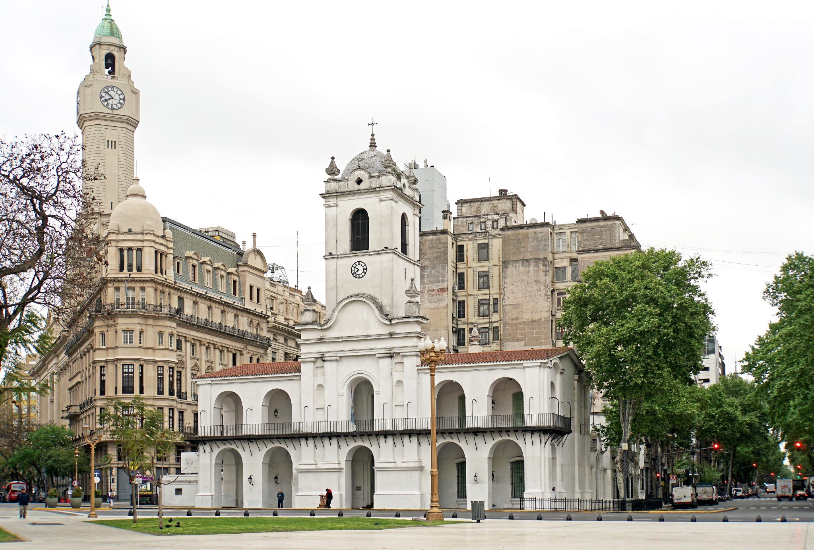
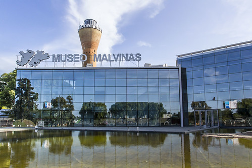
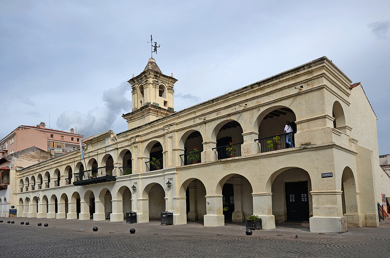
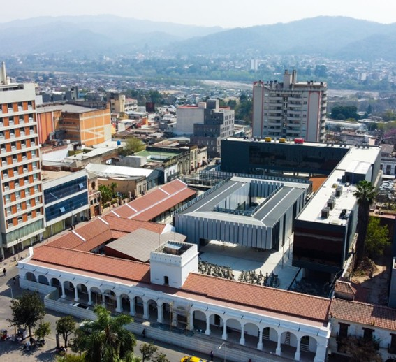
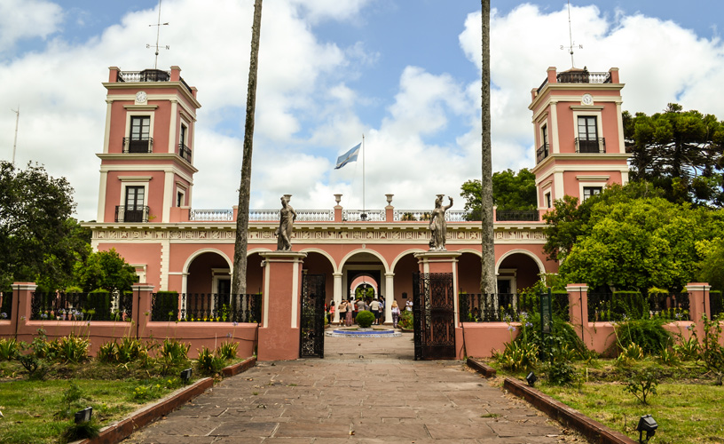

Museos Argentinos
Museo Nacional del Cabildo y la Revolución de Mayo
Ubicación: Bolívar 65, Ciudad de Buenos Aires
Ubicado en la Plaza de Mayo, el Cabildo de Buenos Aires fue el epicentro de la Revolución de Mayo de 1810. Hoy es un museo que exhibe documentos, objetos coloniales y recreaciones de la vida en la época virreinal.
Casa Histórica de la Independencia - Museo Nacional
Ubicación: Congreso 141, San Miguel de Tucumán, Tucumán

También conocida como la Casa de la Independencia, en este lugar se firmó la Declaración de Independencia de Argentina el 9 de julio de 1816. Conserva mobiliario de la época y salas con exposiciones sobre los protagonistas de la independencia.
Museo Malvinas e Islas del Atlántico Sur
Ubicación: Av. del Libertador 8151, Ciudad de Buenos Aires
Este museo honra la historia de las Islas Malvinas y su relación con Argentina. Presenta documentos históricos, testimonios de excombatientes y una mirada geopolítica sobre el conflicto de 1982 con el Reino Unido.
Museo Histórico del Norte
Ubicación: Caseros 549, Salta
Ubicado en el antiguo Cabildo de Salta, este museo exhibe objetos de la época colonial y la independencia. Destacan piezas arqueológicas, arte sacro y documentos relacionados con las luchas de Güemes y San Martín.
Museo y Cabildo de Jujuy
Ubicación: Calle Belgrano 493, San Salvador de Jujuy, Jujuy
Este edificio colonial fue clave en la resistencia durante las guerras de independencia. Hoy funciona como museo y exhibe documentos, armas y objetos de la época, además de ofrecer información sobre el Éxodo Jujeño.
Museo y Palacio San José - Monumento Histórico Nacional
Ubicación: Ruta Provincial 39, Caseros, Entre Ríos
Fue la residencia del caudillo Justo José de Urquiza, primer presidente constitucional de Argentina. Es un imponente palacio con mobiliario original, obras de arte y jardines que reflejan la arquitectura de mediados del siglo XIX.